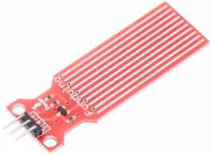
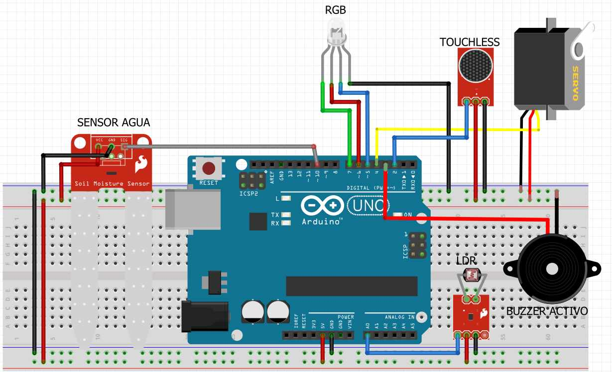
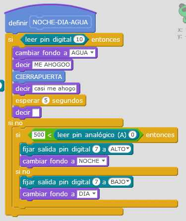

2.5 ALARMA AGUA
2.5.1 Conocimientos previos
2.5.1.1 SENSOR DE AGUA

Es un sensor muy sencillo: Al mojar los conductores, aumenta la conductivilidad y traduciéndolo en una salida HIGH en su pin de salida S. Si quieres saber más de este sensor visita esta página.
Con sólo tener los dedos húmedos ya lo detecta.
Hay que tener en cuenta que sólo queremos detectar AGUA o NO AGUA, o sea digital. Hay otros sensores de humedad que están indicados para medir la humedad del suelo, (tienen forma de dos pinchos para clavarlos) en estos casos que queremos medir la cantidad de humedad la señal es más precisa y analógica. Ver
2.5.2 Objetivo
- Si detecto agua :
- Aviso de agua en el fondo y en el objeto Panda
- Cierre la puerta pues entra el agua de la lluvia con el mismo procedimiento que en apartado anterior.
2.5.3 Esquema
- Pin 10 : Sensor de agua
El esquema el sensor de agua es uno de humedad, pero había otro en Fritzing :(

2.5.4 Vídeo
2.5.5 Solución
El programa lo puedes descargar aquí
Simplemente se ha añadido al bloque del interruptor crepuscular pues es el bloque que cambia los fondos y el aspecto del avatar Panda
